Improve Systems
I help colleges and organizations simplify complex workflows, reduce turnaround time, and make services easier to manage.
I help people make sense of complicated systems. My background is in higher education leadership, student services, records, and workflow improvement. I also build clear, accessible digital tools that make everyday processes easier to use.
I’m based in Albany, Oregon, and I’ve spent more than 20 years working in higher education.
I’ve led registrar operations, enrollment projects, student records work, and system improvements
that helped students and staff get things done faster.
I’m at my best when I’m untangling a messy process, improving a service, or turning something
confusing into something clear and useful.
I help colleges and organizations simplify complex workflows, reduce turnaround time, and make services easier to manage.
I bring years of experience in student services, records, and compliance-focused environments where clarity matters.
I design and build web tools that reflect real-world needs, focusing on usability, accessibility, and clear communication.
Higher education systems, student services, and workflow improvement
Managed and mentored 10 staff and student employees
Registrar and systems leadership roles
National award for workflow and service innovation
Banner, DegreeWorks, and Laserfiche experience
Higher education taught me how to solve real problems for real people. I’ve worked with students, faculty, staff, and leadership to improve services, clean up confusing processes, and make systems easier to use.
My work has included registrar operations, transfer credit, student records, international programs, degree audits, Banner SIS, DegreeWorks, Laserfiche, training, documentation, and workflow redesign. I’ve also helped teams move paper-heavy steps into cleaner online processes that saved time and reduced frustration.
More recently, I added web development to that same toolkit. I build websites and apps with a focus on clear content, accessibility, and practical design. For me, the goal is not technology for its own sake. The goal is making something easier for the person using it.
Equity and inclusion have been central to my work in higher education. As a registrar and enrollment services leader, I supported students from many backgrounds, including first-generation students, veterans, undocumented and DACA students, international students, and transfer students.
At Linn-Benton Community College, I worked to make student services clearer, more accessible, and more responsive. This included supporting preferred name use across systems, improving forms and workflows, creating clearer resources, and partnering with equity-focused teams to reduce barriers for students.
I also served in equity leadership roles, including the President’s Advisory Council on Equity and the Values, Inclusion, and Cultural Engagement Council. Across my work, I focus on building policies, systems, and services that treat students with accuracy, respect, and care.
Recognized for improving student services through online forms, workflow automation, and faster transcript evaluation.
Contributed to digital service improvements through workflow redesign and better online processes.
Helped lead the rollout of degree audit tools that made academic planning easier to follow.
“Her foresight let us serve students seamlessly during COVID. She made processes clearer and more accessible.”
“Amy built and launched multiple systems. She led our Degree Works rollout, which still streamlines the student experience.”
“A campus leader and national award winner for Laserfiche work on paperless forms, automated workflows, and faster routing.”
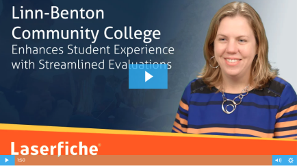
Led the redesign of transcript evaluation at Linn-Benton Community College, moving a slow, paper-heavy process into a clear online workflow. Turnaround time dropped from 6–8 weeks to about one week, and students had better updates at every step. The project received the Laserfiche Run Smarter Award.
Presented how our team used e-forms and workflow to make student services faster and easier to navigate. Covered transcript evaluation, petitions, routing, and student updates.
National webinar on improving student services with e-forms and workflow automation while reducing costs and turnaround time.
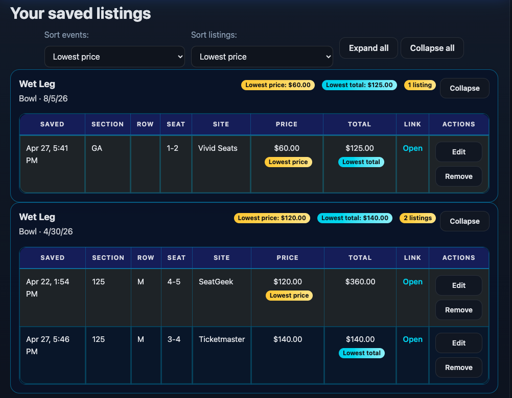
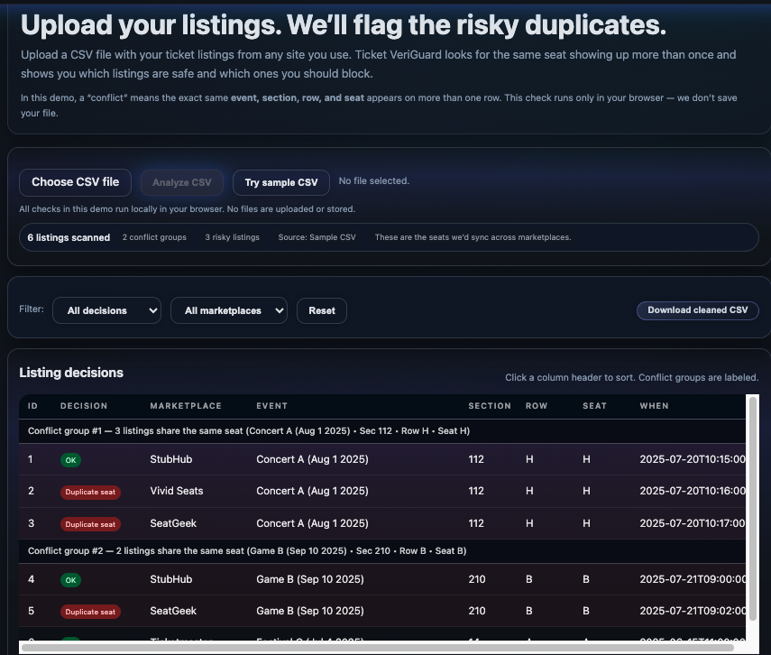
Built a ticket comparison and tracking tool to make ticket shopping less chaotic. Users can search sites, save listings, compare prices and seat details, and check for possible duplicate listings before buying.
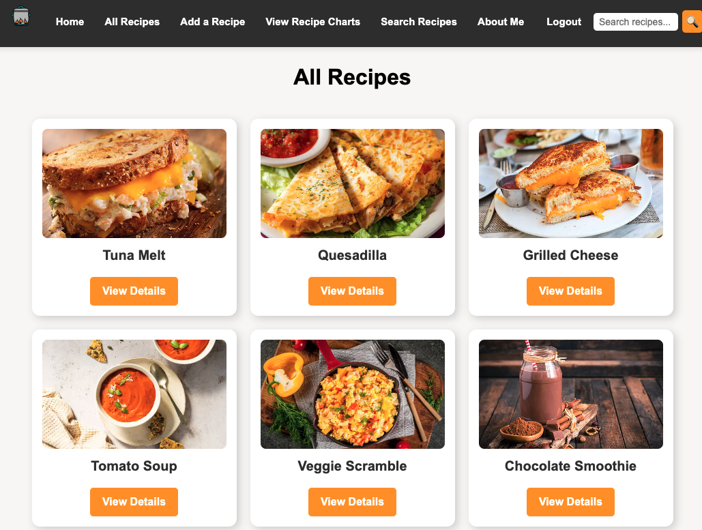
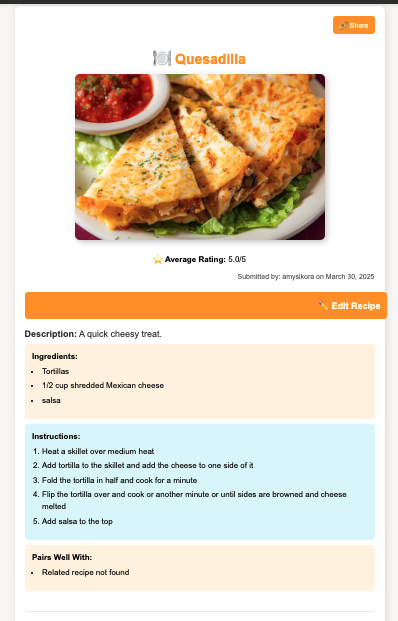
A full-stack Django app where users can create, edit, and rate recipes. Includes charts, image storage, and a clean layout that makes it easy to browse and manage content.
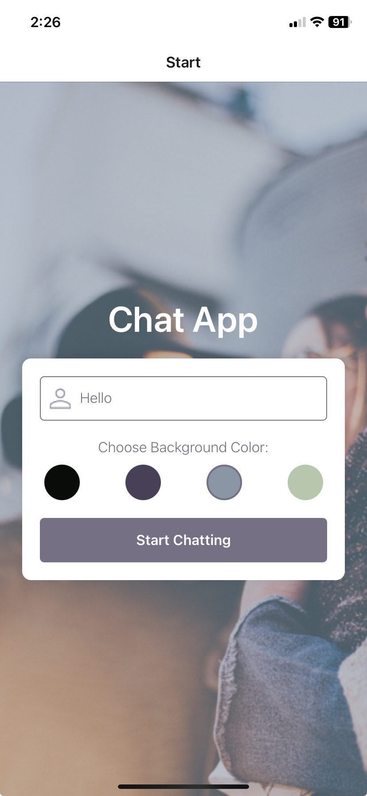
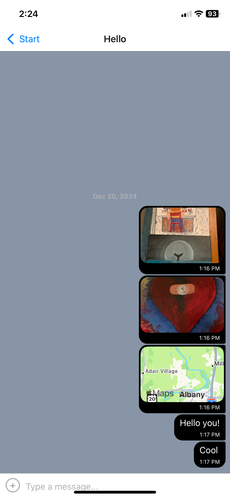
A mobile chat app built with React Native. Users can send messages, share images, and access chats offline. Designed with a simple interface that works smoothly on a phone.
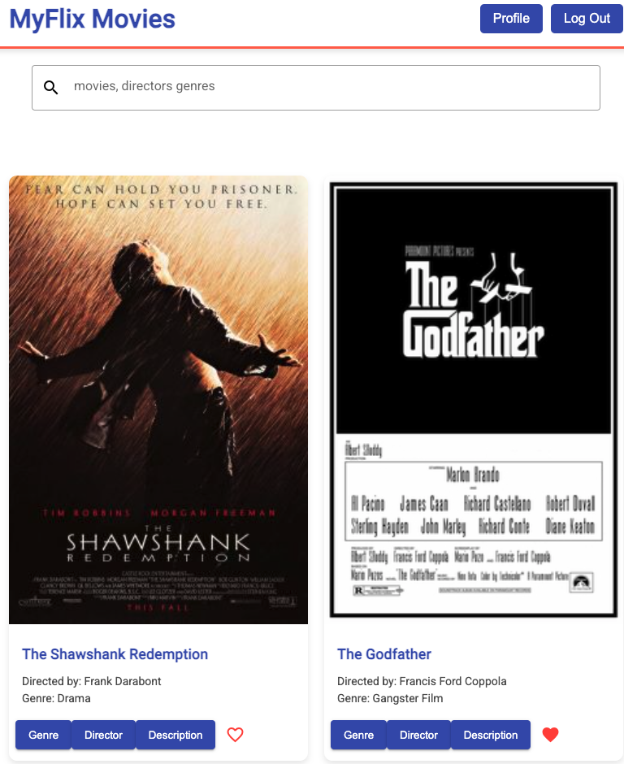
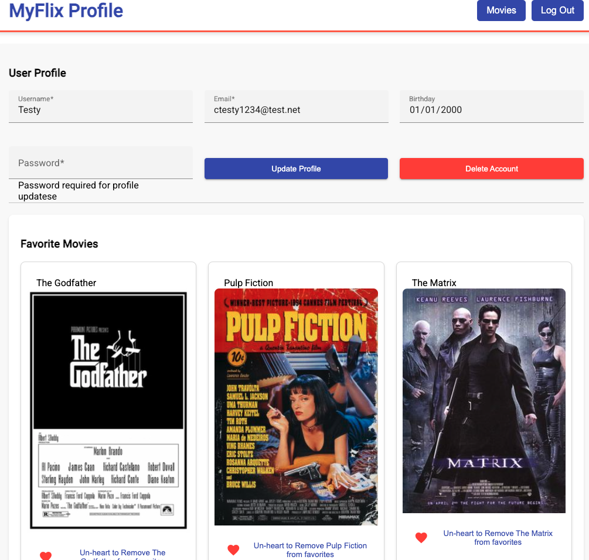
A movie app where users can browse, search, and save favorite films. Built with Angular and connected to a backend API, with a focus on clean layout and easy navigation.
I write to make complicated ideas easier to follow. My writing includes personal essays, technical documentation, product content, and magazine features.
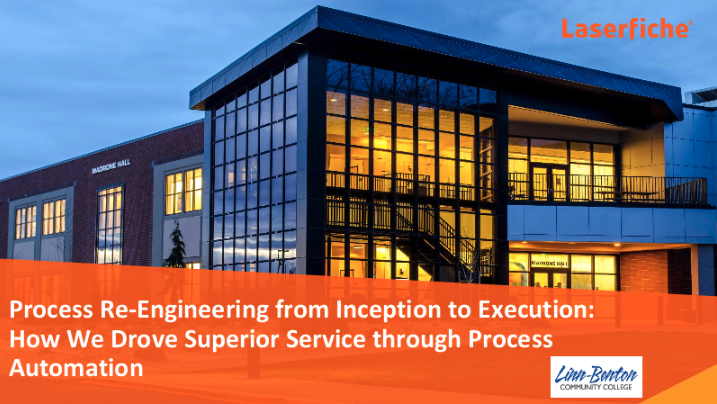
Documentation and case study work focused on higher education systems, workflow automation, and clear step-by-step guidance.
A personal essay about education, persistence, and the comment that helped change the direction of my life.
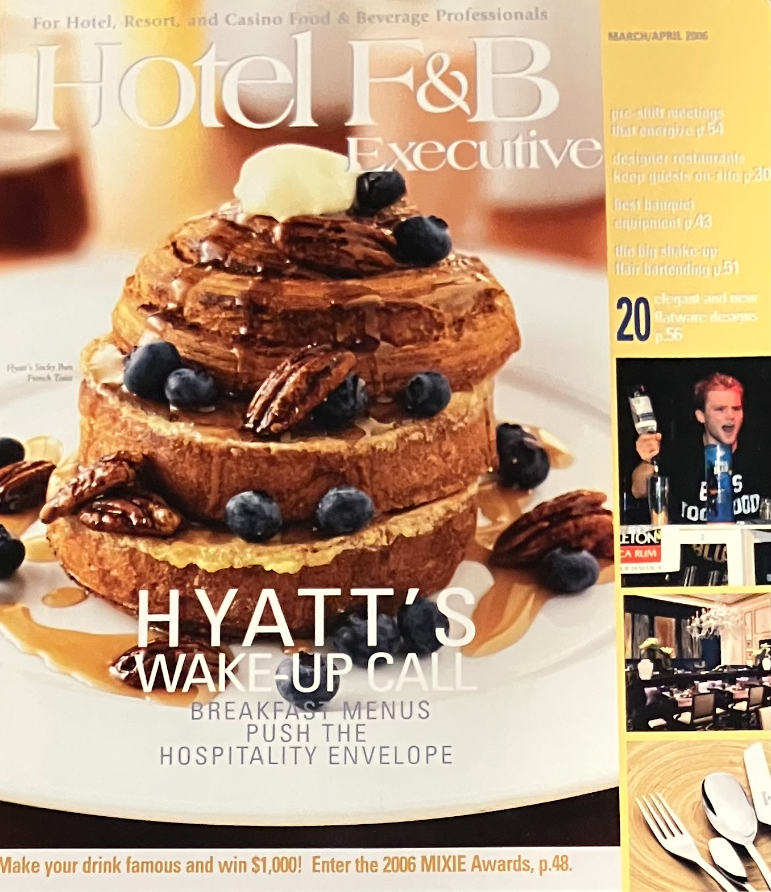
A feature article focused on trends in hotel food and beverage operations, blending industry insight, interviews, and practical takeaways for hospitality professionals.
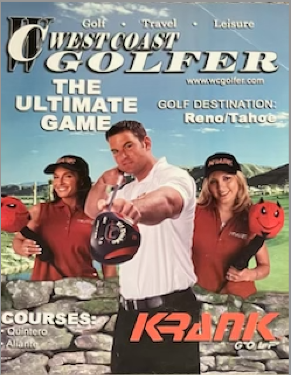
A magazine feature blending humor, regional color, and an interview with a Master PGA Professional.
Want to talk about student services, systems, workflow improvement, writing, or web projects? I’d be happy to connect.